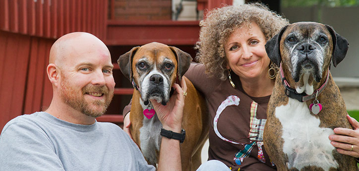

Our company was founded in 1980 by Jackson Lee. we sold the veterinary products in the early period. However, we expand our product lines to provide more different products, services, advice and experiences that keep pets physically fit, mentally alert, socially engaged and emotionally happy. We sell dogs, cats, fish, small animals, birds, and veterinary diets. Also, we provide prescription services and pet health advice service to customers. With more than 35 years of service to pet parents, our company has been one of a leading pet specialty retailers that obsesses about delivering health and happy experiences for pets and the people who love them.

We not only have cute animals, also bring all best to you! We employ more than 10,000 partners and operate more than 600 locations across the U.S. and Mexico. We provide digitally-delivered pet health advice through online contact. Our company also build up an independent nonprofit organization to help promote the welfare of companion animals. In conjunction with the Foundation, we work with and support thousands of local animal welfare groups across the country to help animals find their homes.
